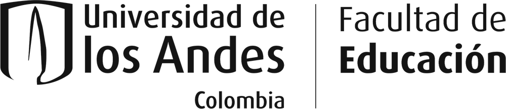

Salidas de campo
Cada semestre salimos del aula para conocer de cerca las realidades del país.
-
Cada semestre
Organizamos salidas de campo todos los semestres.
-
Para cualquier estudiante
No importa tu licenciatura ni tu semestre: cualquier estudiante puede participar.
-
Conocer el país
El objetivo es conocer de primera mano las realidades del país y llevar esa mirada al aula.